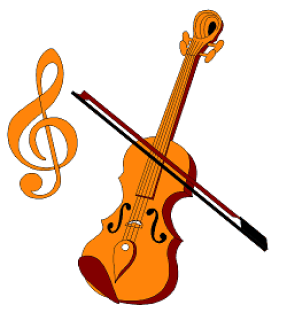
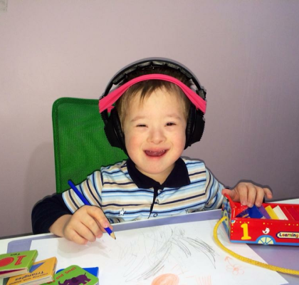
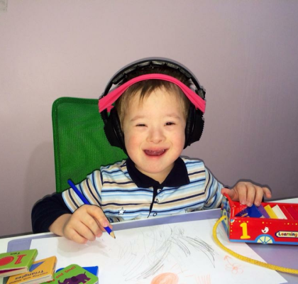

АПФ-терапия используется так же в качестве мощного стимулирующего средства
для людей, у которых профессии неразрывно связаны с голосом. Например,
дикторы, певцы, лекторы и т.д.
Важной особенностью уха является способность к анализу сложных звуков.
Звучащий предмет, например струна, колеблется не только целиком, давая
основной тон, но и своими частями (половиной, четвертью и т.д.), колебания
которых дают обертоны (гармоники), что вместе с основным тоном составляет тембр.
Все окружающие нас природные звуки содержат ряд обертонов, или гармоник, которые
придают звуку определенную окраску — тембр.


Звуки различных музыкальных инструментов одинаковой силы и высоты отличаются
величиной, числом и качеством обертонов и легко распознаются ухом. Лишь
некоторые деревянные музыкальные инструменты способны синтезировать чистый
тон. Люди с музыкальным, или абсолютным, слухом обладают наиболее выраженной
способностью производить анализ частоты звука, выделяя его составные обертоны,
отличая две рядом расположенные ноты, тон от полутона. В основе музыкального
слуха лежат тонкое распознавание частотных интервалов и музыкальная (звуковая) память.
По специальности А.Томатис был врач-отоларинголог. Т.к. его отец был известным
оперным певцом, то Томатис проводил много исследований по взаимосвязи между
слухом и голосом в произношении фальшивых нот. В дальнейшем Томатис успешно
проводил лечение таким известным певцам как Мария Каллас, Лучано Паваротти и
анализировал проблемы слуха у Энрико Карузо.
На чем была основано исправление голоса? Певцы могли, в прямом смысле этого слова,
своим пением оглушить самих себя. Вследствие этого определённые высокие тона не
воспринимались на слух и полностью исчезали из голоса, так как их обратная связь
была нарушена. В своем лечении А.Томатис основывался на улучшении чувствительности
пропавших частот слуха.


 
